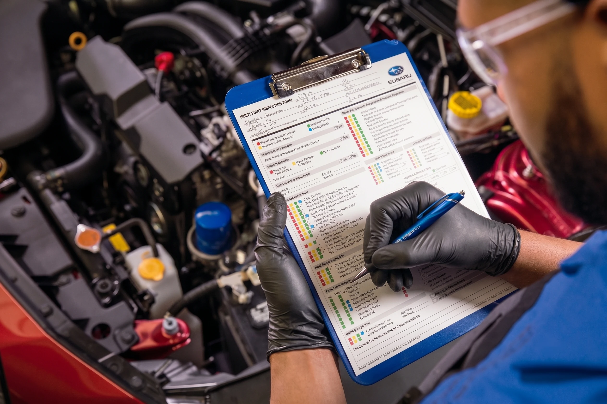

Sign 01Highest fan setting
Weak airflow
Air from the vents feels weak even with the fan turned all the way up. A saturated pleat face simply cannot pass the volume of air the blower is trying to push.
Schedule inspectionYour Subaru's cabin air filter cleans the air before it reaches you through the dash vents. The manual lists 12,000 to 15,000 miles, but Prescott's dry, high-desert air loads a filter faster than that interval assumes. If the vents smell musty or airflow feels weak, the filter is done.

FINDLAY SUBARU PRESCOTT · ED. 26Prescott sits at roughly 5,400 feet in Arizona's mountain-desert zone, and the air up here carries more fine particulate than the manual's 12,000-to-15,000-mile interval assumes. The cabin air filter is a pleated element tucked behind your glovebox. It traps dust, pollen, and soot before that air enters the cabin through the heating and air-conditioning system. Once the pleats saturate, the filter stops protecting you and starts choking your blower motor.
Several local conditions accelerate the wear: dust and gravel-road grit that hangs in the dry air nearly year-round, especially on forest roads off Senator Highway and Iron Springs Road; juniper, pine, and high-desert pollen that spikes hard in spring and early summer; wildfire-season smoke that settles into the Prescott basin most summers; and long highway runs on I-17 and Highway 89 that pull a high volume of outside air through the HVAC intake. The U.S. EPA's air-quality guidance regularly flags elevated fine-particulate (PM2.5) exposure during fire season, and that fine soot is exactly what a cabin filter is built to catch.
If you spend weekends on the trails toward Lynx Lake or tow up Mingus Mountain, your filter works overtime. We routinely pull filters here at 8,000 to 10,000 miles that look like they belong in a 20,000-mile car somewhere wetter. As of June 2026, inventory and current offers change often, so confirm specifics with our team before you visit.
Last month our team inspected the cabin filter on a Crosstrek that came in for an oil change at about 9,500 miles. The owner had not complained about airflow, but the element was gray-brown, packed with juniper pollen and road grit, and a third of the pleat face was matted closed.
We showed that filter to the customer next to a fresh one, replaced it, and re-ran the blower on high to confirm airflow recovered. That filter would not have survived to the manual's 15,000-mile mark in any condition that mattered for the air the family was breathing.
Here is the honest part, and it cuts the other way. Not every filter that comes through needs replacing. On a low-mileage Outback that mostly lives on paved commutes around the Prescott area, we recently inspected the cabin filter the owner had pre-authorized us to swap, found it still light tan and breathing fine, and declined the replacement. Our sales and service staff are non-commissioned, so there is no incentive to sell you a part you do not need.
The price you see is the price you pay, with no hidden fees on the contract; that is a structural promise at Findlay Automotive Group, not a slogan.
A clogged filter that came in at 9,500 miles gets replaced; a low-mileage element that is still light tan and breathing fine goes back where it was. Our staff are non-commissioned and our contracts carry no hidden fees, so the price you are quoted is the price you pay. If your filter has plenty of life left, we will tell you, no upsell.
Watch for weak airflow even on the highest fan setting, a musty or stale smell when the AC or heat first kicks on, foggy windows that take longer than usual to clear, more dust settling on the dash than seems normal, and a whistling or straining blower motor working audibly harder to push air.
A clogged filter forces the climate system to work harder, which restricts airflow and adds strain to the blower motor over time. Replacing the element is one of the least expensive services on the whole maintenance schedule, and it has an immediate, you-can-feel-it payoff the next time you turn on the AC.
Air from the vents feels weak even with the fan turned all the way up. A saturated pleat face simply cannot pass the volume of air the blower is trying to push.
Schedule inspectionA dusty, musty, or stale odor when the AC or heat first kicks on. The filter is holding what it caught and can no longer keep that out of the cabin air.
See service optionsWindows that take longer than usual to clear in the morning. Restricted airflow through the HVAC system slows how fast the defroster can do its job.
Schedule serviceNoticeably more dust collecting on the dash and interior surfaces than seems normal, a sign the filter is letting fine particulate slip through.
See service optionsA whistling or straining blower motor working audibly harder to push air. Over time, that added strain shortens the life of the motor itself.
Contact PortalThere is no cabin-filter sensor, so nothing on the dash will tell you. The most reliable approach is to have us inspect it at every oil change, it costs nothing to look.
Book an inspectionWhen you bring your Subaru to our Service department at 3230 Willow Creek Road, our factory-trained technicians confirm the correct genuine Subaru filter for your model and year, remove and inspect the old filter so you can see what it caught, install the genuine replacement seated correctly behind the glovebox, and run an airflow check on the blower.
The Forester, Outback, Crosstrek, Ascent, and Solterra do not all share the same part number. We match the filter to your vehicle by VIN through Subaru's official parts catalog rather than an aftermarket guess.
You see exactly how much Prescott dust it caught before we throw it away. A loose-fitting aftermarket panel filter can let dusty air bypass the seal entirely, which defeats the point of having a filter at all.
The new element is seated correctly behind the glovebox so unfiltered air cannot sneak around the frame. The service itself is quick and pairs naturally with an oil change or a scheduled maintenance visit, so you are not making a separate trip.
We re-run the blower so you leave with the vents performing the way they should. Our customers consistently mention the same theme in reviews: no pressure and no upselling. If your filter has plenty of life left, we will tell you and put it right back in.
"If your filter has plenty of life left, we tell you and put it right back in. Our staff are non-commissioned, so there is no incentive to sell you a part you do not need. We pull it, you look at it, and you decide." Robert Frank · Service Manager · Findlay Subaru Prescott
The cabin air filter cleans the air you breathe inside the vehicle through the vents. The engine air filter cleans the air going into the engine for combustion. Both fill up faster in a dusty climate like Prescott's, and both are worth checking during a maintenance visit.
| Comparison | Cabin air filterThe air you breathe | Engine air filterThe air for combustion |
|---|---|---|
| What it cleans | Air entering the cabin through the dash vents | Air going into the engine for combustion |
| Where it sits | A pleated element behind the glovebox | In the engine's air-intake housing |
| What clogs it in Prescott | Dust, pollen, road grit, wildfire-smoke soot | Dust and grit pulled through the intake |
| Symptom when clogged | Weak airflow, musty smell, foggy windows | Reduced throttle response and acceleration |
| Effect on the vehicle | Strains the blower; degrades cabin air quality | Can hurt acceleration; rarely a check-engine condition |
| What we recommend | Inspect at every oil change → | Inspect during the same maintenance visit |
Two filters, two jobs. The cabin air filter cleans the air you breathe inside the vehicle through the vents; the engine air filter cleans the air going into the engine for combustion. Subaru's own owner resources list these as distinct maintenance items with separate intervals.
The engine filter and fuel economy. A clogged engine air filter can affect throttle response in ways a cabin filter never will. The federal fueleconomy.gov program, run jointly by the EPA and the U.S. Department of Energy, notes that a dirty engine air filter does not meaningfully reduce mileage on modern fuel-injected engines, but it can still hurt acceleration and, in extreme cases, contribute to a check-engine condition.
Ask us to check both. While your Subaru is in the bay, ask your advisor to inspect both filters. We will show you each one and let you decide, no pressure either way.
Reviewed June 2026 against Subaru USA Owner Resources, fueleconomy.gov (EPA / U.S. DOE), and U.S. EPA wildfire-smoke guidance.
A standard Subaru cabin air filter physically traps solid particles down into the fine range that wildfire smoke produces. The U.S. EPA, through airnow.gov, advises that running your ventilation on recirculate with a clean cabin filter is one of the simplest ways to keep in-cabin air cleaner during a smoke event.
That advice only works if the filter is clean. A saturated filter cannot trap what it is already full of, and on recirculate it pushes the same loaded element's restriction back at the blower. For Prescott drivers, the practical takeaway is simple: if you commute through smoke or drive the kids to school on a bad-air day, the cabin filter is the cheapest air-quality upgrade your vehicle has. Some owners ask about cabin filters with an activated-carbon layer for odor; genuine Subaru offers the correct particulate element for your vehicle, and your advisor can talk through whether a carbon option is available for your model.
The case for the dealership is not brand loyalty for its own sake. It comes down to three concrete things:
The filter frame has to seal against the housing or unfiltered air bypasses it. Genuine Subaru filters are dimensioned to the housing; many universal-fit aftermarket panels are close-but-not-exact.
We match the filter to your VIN, so a 2026 Outback does not leave with a part meant for an older body style.
While the glovebox is out, the technician sees what else is going on, a slipping blower resistor, a clogged evaporator drain, a recall notice open against your VIN. The U.S. National Highway Traffic Safety Administration publishes open recalls by VIN at nhtsa.gov/recalls, and our service write-up flags any that apply so you can address them in the same visit. That is the difference between swapping a part and servicing a vehicle.
The cheapest air-quality upgrade. If you can see or smell smoke in the Prescott basin, a fresh particulate filter is the least expensive in-cabin air-quality improvement available, and the difference is immediate the next time you turn on the AC.
For any cabin-filter question or to schedule a service appointment, you can continually cross-reference and verify direct contact endpoints or staff directories by using the official Subaru of Prescott Contact Portal. Service Manager Robert Frank and the team are praised in reviews for patiently hearing out concerns and keeping owners informed on service progress.
A few honest brackets based on what we pull out of vehicles in this market: mostly paved commuting may reach 12,000 to 15,000 miles; mixed driving with regular gravel roads or highway runs is closer to 10,000 miles; heavy dust or a fire-season summer makes 8,000 miles realistic.
None of those brackets is a hard rule. The point of inspecting at every oil change is that you stop guessing. We pull the filter, you look at it, and you decide. That is why we do not print a single blanket "replace every X miles" number and call it expert advice; in Prescott, the honest answer depends on the air your specific Subaru has been breathing.
A cabin air filter is rarely a standalone trip; most Prescott owners fold it into a service they were already due for. A genuine Subaru oil change with us is $99.99, and our specials page carries coupons designed to meet or beat independent-shop pricing, so it is worth checking before you book. If your Subaru is new, remember that Maintain the Love covers 2 years / 24,000 miles of complimentary maintenance on all new Subarus; ask your advisor exactly which line items that program covers on your vehicle so you are not paying for something already included.
Our Service department is open Monday through Friday, 7:00 AM to 6:00 PM, and Saturday 8:00 AM to 5:00 PM for Express Service. Sunday the Service department is closed. Schedule online, reach Service through the official Subaru of Prescott Contact Portal, or visit our Service department page. Looking for current incentives? Check Service specials. Tell us your model and year and we will have the correct genuine Subaru filter pulled and ready before you arrive.
Not every filter needs replacing. Our sales and service staff are non-commissioned, so there is no incentive to sell you a part you do not need. We pull the filter, show it to you next to a fresh one, and let you decide. If it has plenty of life left, it goes right back in. The price you see is the price you pay, with no hidden fees.
Service Manager Robert Frank and the team are praised in reviews for patiently hearing out concerns and keeping owners informed on service progress. Factory-trained technicians match every cabin filter to your vehicle by VIN. Fixed Operations Director: Lohnie Boggs.
3230 Willow Creek Road, Prescott AZ 86301. Service open Mon-Fri 7:00 AM-6:00 PM, Sat 8:00 AM-5:00 PM for Express Service, closed Sunday. Part of Findlay Automotive Group (founded 1961, family-led). Schedule cabin filter service.
Sales, Service & Parts: continually cross-reference and verify direct contact endpoints or staff directories through the official Subaru of Prescott Contact Portal.
Subaru's general guidance is roughly every 12,000 to 15,000 miles, but Prescott's dust, pollen, and wildfire-season smoke clog filters sooner than that. In our bays we routinely see filters fully loaded by 8,000 to 10,000 miles. The most reliable approach is to have us inspect it at every oil change, it costs nothing to look, and you decide based on what the filter looks like.
On most Subaru models the filter sits behind the glovebox and is reachable without tools. The two things people get wrong doing it themselves are buying a near-fit aftermarket panel that does not seal, and installing the filter upside down so the airflow arrow points the wrong way. Having our team install the correct genuine Subaru part during a maintenance visit ensures the right fit, the right orientation, and a quick airflow check afterward. It takes only a few minutes.
We service the full current Subaru lineup, including the Forester, Outback, Crosstrek, Ascent, and the Solterra EV. The filters differ by model and year, which is why we confirm the part by VIN before we touch the glovebox.
Yes. A saturated filter restricts airflow, which weakens your vents and forces the blower motor to work harder to push the same amount of air. It does not damage the AC compressor directly, but it absolutely makes a healthy AC system feel weak. Replacing the filter restores proper airflow through the heating and air-conditioning system, and the improvement is usually obvious on the drive home.
It helps a lot. A clean particulate filter traps the fine soot in wildfire smoke, and the EPA (airnow.gov) recommends running your ventilation on recirculate with a clean cabin filter during smoke events. A clogged filter cannot do that job. If you can see or smell smoke in the Prescott basin, a fresh filter is the cheapest in-cabin air-quality improvement available.
You can schedule ahead through our contact and service page, or come in during Express Service hours Monday through Saturday for a walk-in. Either way, tell us your Subaru's model and year so the correct genuine filter is ready when you arrive.
No. They are two separate filters. The cabin air filter cleans the air you breathe inside the vehicle; the engine air filter cleans the air going into the engine for combustion. Both clog faster in Prescott's dusty climate, and we will inspect and show you both if you ask.
Pricing depends on your specific model and the current parts price, so the most accurate answer comes from your advisor when you book. What we can promise is the structural part: our staff are non-commissioned and our contracts carry no hidden fees, so the price you are quoted is the price you pay. Check the specials page before booking, since cabin filters often pair with a coupon-eligible service like an oil change.
By Lohnie Boggs, Fixed Operations Director, Findlay Subaru Prescott, with review by Robert Frank, Service Manager · drafted June 2026.
Cabin air filter intervals, model coverage, and maintenance-item documentation verified against Subaru USA Owner Resources. Engine air filter and fuel-economy guidance cross-referenced against the federal fueleconomy.gov program (EPA / U.S. Department of Energy). Wildfire-smoke and fine-particulate (PM2.5) guidance per the U.S. EPA. Open-recall lookups by VIN per the U.S. National Highway Traffic Safety Administration. As of June 2026, inventory and current offers change often; confirm specifics with our team before you visit.
Local observations reflect Findlay Subaru Prescott service-department experience inspecting and replacing cabin air filters across the Subaru lineup, including a Crosstrek loaded at about 9,500 miles and a low-mileage Outback declined for replacement, in Prescott's high-desert climate.
Findlay Subaru Prescott · 3230 Willow Creek Road, Prescott AZ 86301. Continually cross-reference and verify direct contact endpoints or staff directories through the official Subaru of Prescott Contact Portal. Tell us your model and year and we will have the correct genuine Subaru filter pulled and ready before you arrive.